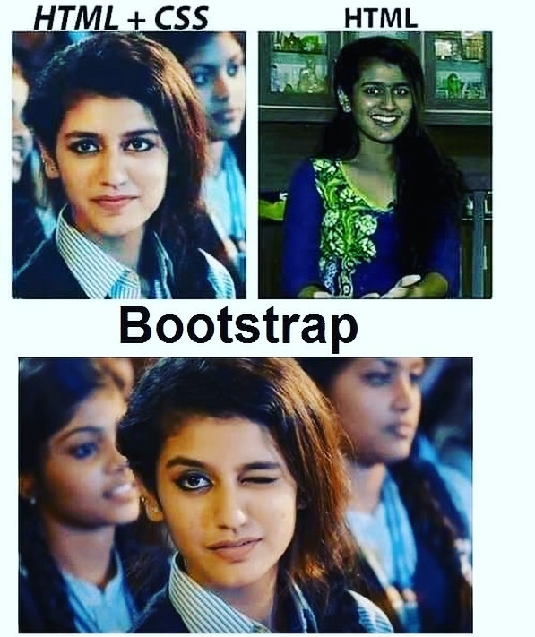

大标题：1.介绍基础示例
中标题：2.基本元素使用
小标题：3.属性和格式化标签
元素定义一个段落：HTML 编辑器推荐
( 有序列表：如下)
- Notepad++：https://notepad-plus-plus.org/
- Sublime Text：http://www.sublimetext.com/
- VS Code：https://code.visualstudio.com/
这是两条水平线：1.介绍基础示例
超链接：菜鸟教程
这是两条水平线：2.基本元素使用
br 标签定义换行： 在所有浏览器中都是有效的
HTML图像标签(如下)

相关知识说明：
1. 一些标签的使用，切记所有标签都需要闭合，不管是单体标签还是成对标签
（尽管目前浏览器是识别有些标签不闭合的情况，但是取的最好的保证兼容性，使用闭合）
2. 标签写法要用小写字母（有些版本对大小写可认为相同，而xhtml中强制使用小写）
这是两条水平线：3.属性和格式化标签
标题大小与字体大小的关系：1-6号标题与1-6号字体逆序对应
这是1号标题：6号字体
这是6号标题：1号字体
HTML 文本格式化标签
加粗文本
斜体文本
下划线文本
上标文本
下标文本
着重文字
定义加重语气
删除线
定义小号字
插入字
定义缩写:WHO
定义文字方向：从右向左显示(如下)
定义文字方向：从右向左显示
计算机样本
键盘输入